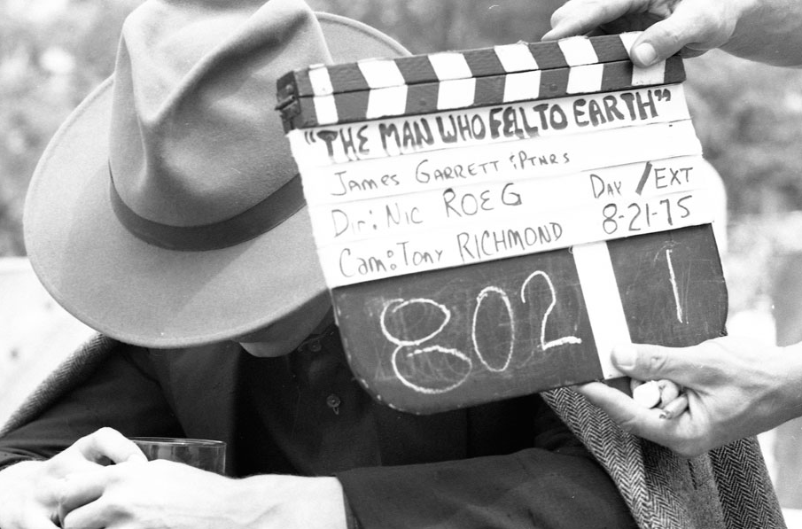
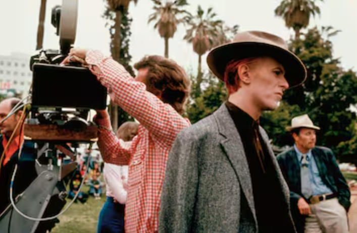
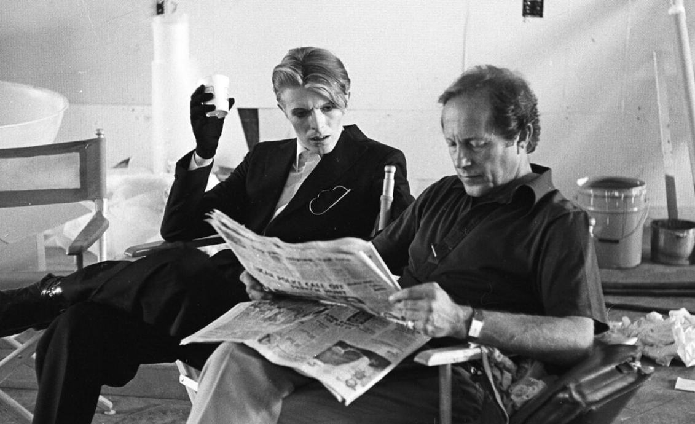
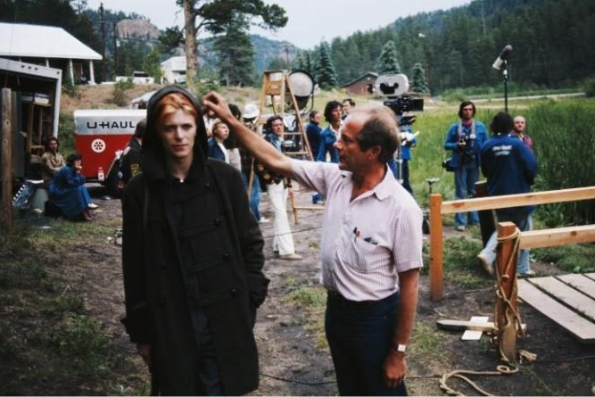

Galería
Deslizá para ver más.




Producción de Barry Spikings y Michael Deeley. Rodaje con localizaciones reales en el desierto de Nuevo México y una fotografía que mezcla tonos cálidos, reflejos y encuadres fragmentados. La puesta en escena subraya la alienación con texturas, vidrios y televisores.
Deslizá para ver más.